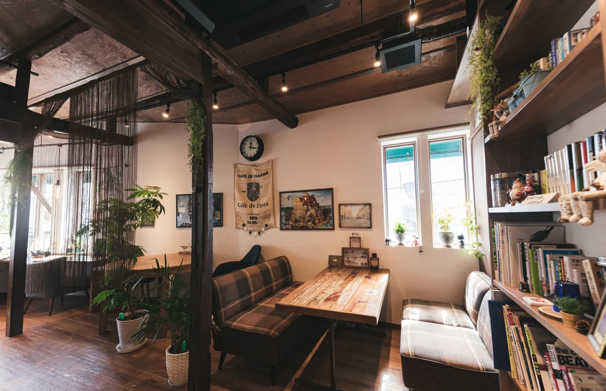

岡島喫茶店は皆様のご来店お待ちしています
About 岡島喫茶店
岡島喫茶店は1995年に弊社社長がオープンした喫茶店です。
弊社社長は18歳の時からずっと自分の喫茶店を開きたいと思っており、開業資金を貯め続け開いたお店です。
弊社社長は1981年で地元のイタリア料理店で10年修行を積み、そこでパスタ、ピザ作りをしてきました。
独立の際社長は「お店を持ってお客様に癒しを届けたい」と言いました。
それがこのお店の理念である
「お客様に最高の癒しを」